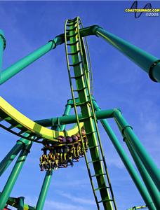

RAPTOR
SPECS
Max Height: 137 ft.
Max Speed: 57 mph
Inversions: 6
Duration: 2 min. 32 sec.
Manufacturer: Bolliger & Mabillard
REIVEW
Raptor is an inverted coaster at Cedar Point. This ride gives you plenty of opportunities to throw your feet in the air, 6 times to be specific. It’s a really fun ride and features a boomerang loop, which everyone needs to experience. I think the first time I went on this ride, I got a little tunnel vision because of the G-forces on the first drop. It’s one of the best inverted coasters, if not the best.